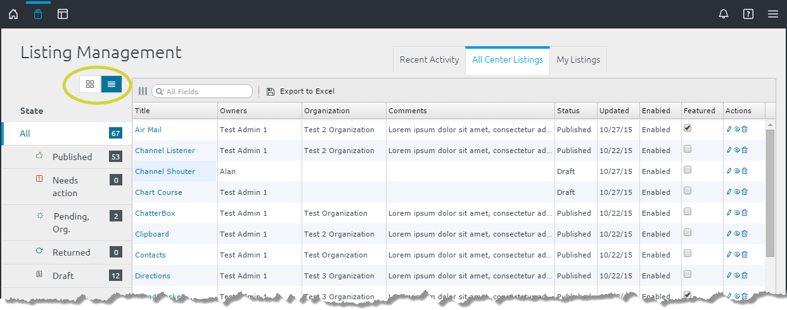

Manage Listings as an Org Steward
Org stewards can see every listing in their organization from their Listing Management page. To access this page, click the drop-down Main Menu on the right side of the Global Toolbar and select Listing Management:

As an organizational steward, the Listing Management page displays information about listings you own and listings you oversee. The Listing Management page displays different information for different users. The following sections explain each field as it relates to org stewards. For the user view see Manage your Created Listings.

As an org steward, you see multiple tabs on the Listing Management screen:
- The Recent Activity tab displays changes to all listings you oversee.
- The My Listings tab displays listings you own.
- Each organizational tab displays listings that you oversee for that specific organization. All the organization's listings appear there.

The left-side State panel provides slightly different information than a user's or Center steward's left-side panel:
State
- All - Listings you oversee as a steward
- Published - Listings that are approved by Center and organizational stewards within your organization (this number includes listings that are Disabled)
- Needs action - Listings waiting for your approval. For instructions regarding approving or returning listings see Approve or Return Listings.
- (Pending) Org approved - Listings waiting for Center steward approval
- Returned - Listings returned to their owners
- Draft - Listings in the system that have not been submitted for approval
Enabled
All stewards see the Enabled section which allows them to filter by enabled and disabled listings. (For information about enabled and disabled listings see Enable or Disable a Listing.
Listing Management Table View

From the steward management tabs, you can switch to a table view by clicking the table button on the upper-left side of the state panel (circled in the figure above). To switch back to the standard listing management view, click the grid button located at the top-left of the State panel.
The table view lists:
- Name -- links to the listing
- Owner -- links to the owner's profile
- Comments -- lists the last comment from the change log
- Status
- Updated date
- Enable/Disabled status
- Featured status -- to feature a listing or remove it from the featured listings, check or uncheck this field
- List of Actions -- click the edit, feedback, view or delete actions to update or review the listing:
Use the Listing Management Table
From the table view, stewards can:
- Preview a listing by clicking its Name. From here, you can publish pending listings using the Administration tab.
- See the listing owner's profile by clicking their name.
- Read the last entry in the listing's change log (entered in the comments field).
- Feature a listing by checking it. Also, to stop using a listing as a Featured Listing on the Search and Discovery Page, uncheck it.
- Edit, review feedback comments, view or delete a listing from the Actions column.